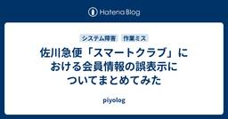
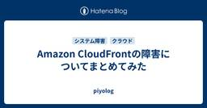
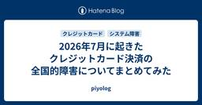

piyolog
https://piyolog.hatenadiary.jp/
piyokangoの備忘録です。セキュリティの出来事を中心にまとめています。このサイトはGoogle Analyticsを利用しています。
フィード
WordPress Coreの脆弱性 CVE-2026-63030 / CVE-2026-60137 (通称「wp2shell」)についてまとめてみた 58
58
piyolog
2026年7月17日、WordPressを開発するWordPress.orgは、WordPress Coreに認証不要のリモートコード実行(RCE)に至る深刻な脆弱性が確認されたとして、セキュリティリリース版WordPress 7.0.2を公開し、対象バージョンを利用するサイトに自動更新システム経由での強制アップデートを有効化する対応を取りました。これら2件の脆弱性を組み合わせた攻撃は、発見者により「wp2shell」と命名されています。ここでは関連する情報をまとめます。どんな脆弱性が確認されたの?WordPress Coreでは、REST APIのバッチ処理において、サブリクエストと対応するルート・ハンドラー・検証結果の対応関係がずれる不具合(CVE-2026-63030)と、WP_Queryのauthor__not_inパラメータに攻撃者が制御可能なスカラー値が渡された場合にSQLインジェクションが生じる不具合(CVE-2026-60137)が確認された。CVE-2026-63030を悪用すると、本来Batch API経由では呼び出せないREST APIエンドポイントの実行や、パラメータの存在確認、型チェック、権限確認など、エンドポイント実行前の検証を迂回できる。CVE-2026-60137と組み合わせることで、影響を受けるWordPress 6.9.0〜6.9.4および7.0.0〜7.0.1の標準構成に対し、未認証の攻撃者がリモートコード実行に至る攻撃チェーンが成立する。この攻撃チェーンは、発見者により「wp2shell」と命名されている。(出典: 1, 2, 3, 4, 13, 19, 20)CVE-2026-60137の脆弱な処理はWordPress 6.8系にも存在する。ただし、6.8系の標準構成では、攻撃者が制御する値をauthor__not_inへ渡す外部入力経路は確認されておらず、悪用にはプラグインやテーマ等による入力経路が別途必要となる。(出典: 6, 7, 13)脆弱性概要項目 CVE-2026-63030 CVE-2026-60137 脆弱性名称 REST APIバッチ処理におけるルート・検証結果の混同 WP_Query author__not_inパラメータのSQLインジェクション CVSS(base) 9.8 Critical(WPSca
5日前

佐川急便「スマートクラブ」における会員情報の誤表示についてまとめてみた
3
piyolog
2026年7月18日、佐川急便株式会社は、会員制Webサービス「スマートクラブ」の配達予定通知メールで、利用者本人の画面に別の利用者の氏名・メールアドレス等が表示される事象が発生し、約7万人の個人情報に影響が及んだ可能性があると公表しました。ここでは関連する情報をまとめます。配達予定通知メールに別人の情報が表示佐川急便は2026年7月15日夕方頃、会員制Webサービス「スマートクラブ」の配達予定通知メールの一部において、本来とは異なる利用者の氏名・メールアドレス・お問い合せ送り状No.が表示される事象を確認した(出典: 1, 2)。公式発表のタイトルは「スマートクラブにおける個人情報漏えいに関するお詫びとお知らせ」だが、後述の通り原因は不正アクセスではなくシステム不具合による誤表示であり、公式・報道とも本文では「個人情報に影響が及んだ可能性がある」と表現している(出典: 1, 2)。対象となった情報は氏名・メールアドレス・お問い合せ送り状No.で、住所・クレジットカード情報は含まれていない(出典: 1, 2)。同社は、本事象により約7万人の個人情報に影響が及んだ可能性があるとしている(出典: 1, 2)。この約7万人は会員全体の人数ではなく、影響が及んだ可能性がある人数。実際に他の会員の情報が閲覧された件数や、通知メールが送信された通数などの内訳は公表されていない。誤表示が生じていた期間(対象となった通知メールの送信期間)も同社は公表をしていない。同社は事象確認後、速やかに復旧対応を実施し、発生原因を踏まえた対策も実施済みで、現在はサービスを正常に利用できる状態としている(出典: 1, 2)。原因はシステム不具合復旧作業時の設定誤り佐川急便によれば、原因はスマートクラブのシステム不具合に対する復旧作業を実施した際、配達予定通知メールの設定に誤りが生じたことによるものだった(出典: 1, 2)。調査の結果、第三者による不正アクセスやサイバー攻撃によるものではないことを確認したとしている(出典: 1, 2)。復旧作業の対象となった元々の「システム不具合」がどのような内容だったかは公表されていない。対象者へ順次メールで案内、完了時期は明示せず佐川急便は、影響を受けた可能性のある対象の利用者へ、お詫びおよび本事象に関する案内を順次メールにて送付するとしており、あわせて再発防
6日前

Amazon CloudFrontの障害についてまとめてみた
61
piyolog
2026年7月16日夕方、Amazon Web Services(AWS)のコンテンツ配信サービス「Amazon CloudFront」で障害が発生しました。PayPayなど、自社基盤への影響を確認・公表した事業者が国内外に見られたほか、ニコニコなど同じ時間帯に不具合が生じたサービスもありました。AWSは障害の原因について、CloudFront内部でVPC Originsへの接続を処理するサーバー群(fleet)が内部的な制約に達したことによるものと説明しています。ここでは関連する情報をまとめます。CloudFrontの「VPC Origins」接続で5xxエラーが増加AWS公式のサービスヘルスダッシュボードによれば、CloudFrontの「VPC Origins」接続(CloudFrontがオリジン〈配信元〉としてVPC内のリソースを直接指定する接続方式)を利用する顧客向けに5xxエラーが増加し始めたのは、日本時間2026年7月16日16時45分ごろ(米国太平洋夏時間の同日午前0時45分)。他のオリジンタイプを利用する顧客は影響を受けていないことを確認したとしている(出典: 1, 2)。AWSは17時44分ごろ、増加した5xxエラーについて調査中であると公式に発表した(出典: 1)。18時21分ごろにはVPC Origins接続を利用する顧客への影響を確認したとしたうえで、VPC Originsを必要としない顧客はオリジンタイプの変更でエラーを回避できるとした(出典: 1)。19時18分ごろ、AWSは調査の結果、障害の原因が「CloudFrontのエッジロケーションから顧客VPC内リソースへのルーティングを担うパケット処理サブシステム」に関連していると考えられるとの見解を示した*1(出典: 1, 12, 16)。さらに20時16分ごろには、原因を同サブシステムの「ルーティングテーブル容量」までさらに特定したとして、緩和策を検証したうえで段階的に展開する方針を示した(出典: 1)。20時27分ごろには「復旧の初期兆候が見られる」として、完全復旧に向けて取り組みを続けているとした(出典: 1)。20時57分ごろには「45分以内に完全復旧の見込み」と発表し、21時21分ごろ、障害の解決([RESOLVED])を宣言した(出典: 1)。AWSはこの宣言のなかで、障害が16
7日前

2026年7月に起きたクレジットカード決済の全国的障害についてまとめてみた
115
piyolog
2026年7月16日午前、全国各地でクレジットカード決済ができない、または利用しづらい障害が発生し、コンビニエンスストアや鉄道の券売機、ECサイト、モバイル決済など幅広い場面に影響が及びました。決済基盤を運営する日本カードネットワーク(CARDNET)や関係するカード会社、国際ブランドの担当者がそれぞれ状況について説明していますが、発信元によって説明の対象・内容は異なり、これらが同一の原因を指しているかは確認できていません。CARDNET自身は自社の障害ではないとしています。ここでは関連する情報をまとめます。コンビニ・鉄道・ECサイトなど全国でカード決済不可に2026年7月16日午前8時ごろから、全国各地でクレジットカード決済ができない、または利用しづらい事象が相次いで確認された。LIXILは「全国的なクレジットカード決済ネットワーク(CARDNET)の通信障害が発生しております」として8時ごろからECサイトの決済エラーが起きていると告知し(出典: 8)、サンドラッグも公式Xで「2026年7月16日午前8時ごろから、クレジットカードシステム障害が発生しております」と告知した(出典: 9)*1。中部しんきんカードは8時頃の発生を、武蔵野ワークスは「今朝8時過ぎより」の発生をそれぞれ告知している(出典: 3, 15)。このほかWINTICKET(日本トーター)が8時10分頃から(出典: 11)、orderieが8時14分頃から(出典: 12)、エポスカードが8時15分頃から(出典: 5)、チャリロトが8時35分頃から(出典: 10)、それぞれクレジットカード決済・チャージの障害を告知した。BtoB請求では、大塚商会もWeb請求のクレジットカード決済でエラーが発生したと告知している(出典: 13、関連未確認、詳細は後述)。交通系電子マネーでも影響が生じた。JR東日本のモバイルSuicaは8時30分に「チャージがしにくい事象が発生している」と発表したとケータイWatchが報じ(出典: 28)、9時15分には公式Xで「外部クレジットカードシステムの障害により、モバイルSuicaのチャージ等がしにくい事象が発生しています」と説明した(出典: 14)。ケータイWatchの報道によれば、首都圏の鉄道・バス各社によるモバイルPASMOでも9時25分に「ログインやチャージ、定期券購入な
8日前

サイバー攻撃によるニチレイグループのシステム障害についてまとめてみた
piyolog
2026年7月13日、株式会社ニチレイは、同社グループのシステムが不正アクセスによる障害を受け、冷蔵倉庫の入出庫業務や冷凍食品の出荷業務に影響が生じていると公表しました。その後、同社のサーバーがサイバー攻撃を受けたことを確認したとして続報を公表し、障害の影響は取引先・関連組織の商品供給にも及んでいます。ここでは関連する情報をまとめます。障害は冷蔵倉庫の入出庫業務にも影響ニチレイは持株会社であり、事業会社として食品事業を担うニチレイフーズと、低温物流事業を担うニチレイロジグループなどを傘下に持つ(出典: 14)。株式会社ニチレイは2026年7月13日、「当社グループでのシステム障害発生について」を公表し、不正アクセスによるシステム障害が発生したことを明らかにした(出典: 1)。ニチレイの広報は取材に対し、社内のシステム部門からの報告でシステム障害を確認したのは同日午前6時50分ごろだったと説明している(出典: 6, 7)。システム障害の影響は、ニチレイロジグループ各社が担う冷蔵倉庫の入出庫業務と、ニチレイフーズの冷凍食品出荷業務に及び、現時点では障害範囲は国内に限定されるとした(出典: 1)。ニチレイは発生同日に緊急対策本部を設置し、顧客・取引先の個人情報や顧客データの保護を最優先に、グループで使用するシステムの遮断措置を講じたことを、7月15日公表の第2報で明らかにした(出典: 2)。また、外部のセキュリティ専門会社と安全対策を講じたうえで、7月17日より順次、冷蔵倉庫の入出庫業務と冷凍食品出荷業務を開始する予定であると公表した(出典: 2)。日本経済新聞によれば、ニチレイは2026年7月17日、低温倉庫への商品搬入や出荷の業務を順次再開した。ただし物流の取引先は約5000社に上るとされ、完全復旧の時期はなお見通せないという(出典: 23)。ニチレイは同日、「当社グループでのシステム障害発生について(第3報)」を公表し、サイバー攻撃により影響を受けていた業務について本日より順次開始したことを明らかにした。お客さま・お取引先からの受発注を一部制限したうえで冷蔵倉庫および食品工場の部分稼働を行っているとし、全拠点について来週中を目指し通常稼働に向けた準備を進めているとした(出典: 33, 34)。テレビ朝日(報道ステーション)が物流関係者への取材として伝えたところによる
9日前
厚生労働省LANシステム更改作業中のTeamsチャットデータ消失についてまとめてみた
piyolog
2026年6月12日、厚生労働省及び同省LANシステムの運用委託先である株式会社東芝は、システム更改作業中に設定を誤ったことによりMicrosoft Teamsのチャットデータ等の一部が削除され、このうち行政文書に該当するチャットデータの一部が復元困難な状態になったと公表しました。ここでは関連する情報をまとめます。行政文書含むチャットデータの一部が復元困難に厚生労働省は2026年6月12日、委託事業者である株式会社東芝(以下、東芝)が業務データの一部を消失させた事案が発生したと公表した(出典: 2)。同省の発表によれば、2026年4月25日、厚生労働省LANシステム内で2023年1月4日から2025年10月29日までの間に作成されたTeamsチャット(職員間の会話)データ、共有ファイル、個人ファイルが、委託事業者の誤作業により削除された。同日公表した東芝のプレスリリースでは、データの復元要件を守るための設定を誤ったことによるものと説明している(出典: 4)。発生(4月25日)から公表(6月12日)までの間、いつ、どのように問題が発覚したかは厚生労働省・東芝いずれの発表にも記載がなく、公表されていない。厚生労働省は削除されたデータの復元を東芝に指示したが、行政文書に該当するものを含むチャットデータの一部が復元困難(データ消失)であることが判明したと発表した。復元困難なデータのうち行政文書に当たる件数は公表されていない。同省は、チャットツールが定型的・日常的な業務連絡に活用されているものであるとして業務遂行への影響は限定的との見方を示す一方、データは完全に消去されているため個人情報を含む情報の漏洩の可能性はないとしている(出典: 2)。厚生労働省は2025年3月28日、「厚生労働省LANシステムの更改整備及び運用・保守業務一式」の落札者を東芝デジタルソリューションズ株式会社と決定した。落札価格は48,160,777,500円(約481.6億円)で、落札者等の公示は同年5月21日付で行われている(出典: 1)。今回のトラブルは、このLANシステム更改作業の中で発生した。*1補助的作業と位置付けられ、レビューを経ずに設定変更東芝が同日公表した原因の詳細によれば、システム更改の一連の作業の中で、厚労省職員が削除したファイル等を一時的に保存する領域の保存期間のみを見直す予定だっ
9日前
7-Zipの改変版インストーラーを介したレジデンシャルプロキシ化についてまとめてみた
piyolog
2026年1月頃、圧縮ソフト「7-Zip」を装った非公式サイトで配布されていた偽インストーラーを実行すると、端末がレジデンシャルプロキシのノードとして悪用される事案を、国内外のセキュリティベンダーや研究者らが相次いで報告しました。Infobloxは2026年7月、この活動の背後にいる攻撃者を「Lurking Lizard」と呼称し、WireVPNを含む複数のブランドを長期にわたり使い分けてきたとする分析を公表しています。ここでは関連する情報をまとめます。Lurking Lizardとは何か非公式サイトを通じて7-Zipになりすました改変版インストーラーを配布し、実行した端末をレジデンシャルプロキシのノードとして悪用する手口である。マルウェア自体は研究者のLuke Acha氏が命名した「upStage Proxy」という呼称があり(出典: 3)、Infobloxはこの手口を長期にわたり展開してきた攻撃者を「Lurking Lizard」と呼称している(出典: 7)。両者は指し示す対象のレイヤーが異なり、「upStage Proxy」はマルウェア(挙動)の呼称、「Lurking Lizard」は運営主体(アクター)の呼称として扱われる。Infobloxの観測によれば、Lurking Lizardは2026年1月に表面化した7-Zip偽装キャンペーンにとどまらず、WireVPNを含む複数のブランド・ルアーを少なくとも2022年8月から並行的に使い分けてきたとしている(出典: 7)。実際、WireVPNブランドの検体についても「早期のものと直近のもの双方」が同一基盤に含まれるとInfobloxは述べており、7-Zip偽装が終わってからWireVPNが始まったという単純な前後関係ではない。Lurking Lizardへの帰属、230超のドメインの関連付け、2022年からの継続年数の認定について、本稿で確認した範囲ではInfoblox以外による独立した追認は確認できていない。一方、WireVPNキャンペーンとの関連そのものについては、NTTドコモビジネスのRyo Minakawa氏(NTT Com-SIRT)が独自の技術的根拠に基づき、Infoblox公表前に独立に発見・報告(後述)していた(出典: 8)。手口の詳細・バリエーション「7zip[.]com」は、7-Zipの公式サ
10日前
個人用リポジトリで見つかった米国セキュリティ機関の認証情報についてまとめてみた
piyolog
2026年7月9日、米国のサイバーセキュリティ・インフラストラクチャセキュリティ庁(CISA)は、委託先担当者(以下「当該担当者」)の個人用GitHubリポジトリを通じて同庁のAWS認証情報などが長期間インターネット上に公開状態にあった事案について、対応の経緯と教訓をまとめた記事を公表しました。ここでは関連する情報をまとめます。外部からの通報で発覚GitGuardianの自動監視システム「Public Monitoring」は2026年5月13日までに、当該担当者が保有する個人用GitHubリポジトリ「Private-CISA」を検知し、同社の自動プログラム「Good Samaritan」がコミット作成者宛てに9通の通知メールを送信していた。(出典: 3) 同社の研究者Guillaume Valadon氏は5月14日にリポジトリの内容を精査し、「最初は偽物(でっちあげ)ではないかと思うほど酷い内容だった」としつつ本物と確認し、CERT/CCポータル経由で現地時間5月14日16時14分(CET)にCISAへ通報した。(出典: 3, 4)CERT/CCからは自動応答のみで週末を控えていたため、GitGuardianは5月15日朝、あえてBrian Krebs氏(KrebsOnSecurity)に連絡し、同氏のCISA人脈を通じて情報を転送してもらうことを決めた。(出典: 3) Krebs氏の働きかけにより同日16時頃(CET)にCISAへ情報が直接到達し、CISAは「調査報道記者からの照会」を受けて内部インシデント対応を開始、その約8時間後にあたる同日18時頃(EST)にリポジトリがオフライン化された。(出典: 1, 3) Krebs氏がこの経緯を記事「CISA Admin Leaked AWS GovCloud Keys on Github」として公表したのは、テイクダウンから3日後の5月18日である。(出典: 4)発覚の経緯 個人用GitHubに約6か月間さらされたAWS認証情報GitGuardianの分析によれば、「Private-CISA」リポジトリは2025年11月13日に作成されて以降、CISAのビルド・デプロイ用リポジトリのコピーや管理者・ビルド用の認証情報が継続的に公開状態でコミットされていた。(出典: 3) リポジトリが非公開化された2026年5月15
12日前
自動で恐喝まで遂行するエージェント型ランサムの観測事例についてまとめてみた
piyolog
Sysdig Threat Research Teamは2026年7月1日、大規模言語モデル(LLM)エージェントが人間の介在をほとんど受けずに初期侵入から恐喝までを完遂したとする攻撃活動を公表し、これを「JadePuffer」と呼称しました。同社はこれを、LLMが単独で完遂した初の文書化された恐喝オペレーション事例と評価しています。ここでは関連する情報をまとめます。Sysdig単独が観測した事象本事案の攻撃連鎖・具体的な数値・IoC等の中核的な事実は、いずれもSysdig Threat Research Teamの単一の観測に依拠する。収集範囲において、他のセキュリティベンダーや関連機関による独立した観測・裏付けは確認されていない。海外の複数媒体が本件を報じているが、いずれもSysdigの当該ブログを引用・後追いするもの(出典:1, 13)。Sysdigは本件を「LLMが単独で完遂した初の文書化された恐喝オペレーション事例」と自ら評価しているが*1、これはSysdig自身の評価であり、第三者による独立検証を経たものではない。Techzineは記事内で、Sysdigの結論について「単一事案の分析と収集された痕跡に基づくものであり、これが真に初の完全自律型ランサムウェア攻撃であるという独立した確認は現時点でない」という留保を明記している*2(出典:13)。「LLM主導」の根拠Sysdigは、本件がLLM主導であるとの評価根拠として次の4つの証拠を挙げている。第一に、ペイロード内に含まれる自己解説的な自然言語コメント。第二に、障害発生時に人手を介さず機械的な速度で診断・修正する挙動で、Nacos不正管理者アカウントの作成では失敗から修正完了までの所要時間が31秒だったと観測している。第三に、標的環境が提示する自由形式テキストへの文脈理解が、数週間離れたセッション間でも再現されていたこと。第四に、後述するビットコインアドレスをめぐる未解決の論点である。あわせて、圧縮された時間内に実行された600以上の個別の目的を持ったペイロードの広がりと一貫性も、自動化の根拠として挙げている(出典:1)。これらはいずれも、捕捉したペイロードのコード内容や実行間隔から読み取れる間接的な行動証拠である。Sysdigは、エージェントに与えられたシステムプロンプトや運用者による設定そのものは確認
15日前
未成年者らのグループによる快活CLUBへの不正アクセスについてまとめてみた
piyolog
2025年1月、複合カフェ「快活CLUB」等を運営する株式会社快活フロンティアは、自社サーバーへの不正アクセスにより会員の個人情報が外部に漏えいした可能性があると公表しました。その後の警視庁の捜査により、SNSでつながった10代を中心とするグループが、対話型AI「ChatGPT」を悪用して自作した攻撃プログラムを用いて大量の不正アクセスを行っていたとみられることが明らかになり、2025年12月以降、複数の未成年者・元未成年者が不正アクセス禁止法違反などの容疑で相次いで逮捕・書類送致されています。ここでは関連する情報をまとめます。会員情報729万件の漏えい可能性快活フロンティアは2025年1月18日(土)夕刻、自社サーバーへの不正アクセスを検知し、直ちにサーバーをネットワークから切り離すなどの対策を実施した。その後、外部専門機関の助言を受けながら影響範囲等の調査を進める過程で、会員アカウントを管理するシステムへの不正アクセスの形跡を確認した(出典: 1, 2)。1月20日にはDDoS攻撃によるネットワーク障害の発生を確認。快活フロンティアは快活CLUBアプリの機能を「会員証の表示」のみに制限した。同日、対策本部を設置して会員アプリサービスの利用制限を開始し、外部への第一報を公表した(出典: 1)。1月21日、快活フロンティアと親会社の株式会社AOKIホールディングスは、外部からの不正アクセスにより会員の個人情報の一部が外部に漏えいした可能性があると公表した。この時点で対象は快活CLUB会員・仮会員の氏名・性別・住所・電話番号・生年月日・会員番号で、コート・ダジュール会員・仮会員は対象外とされ、対象件数は調査中とされた(出典: 1, 2)。さらに1月28日、快活フロンティアは対象者にFiT24会員・FiT24インドアゴルフ会員を追加したうえで、情報漏えいの可能性がある個人情報の件数を「7,290,087件」(約729万件)として初めて公表した(出典: 1, 3)。その後も調査状況の公表を続け、1月31日、快活フロンティアは対象者の表記に誤りがあったとして、快活CLUB会員の対象者表記を「(期間中に)会員になられた一部の方」から「(期間中に)来店実績のある一部の方」に訂正した(出典: 1)。3月17日、快活フロンティアは外部専門機関による調査及び社内調査の完了を受け、調査
15日前
廃棄処分されたHDDのネットオークション流出についてまとめてみた
piyolog
2026年6月8日、独立行政法人国立病院機構は、北海道医療センターと北海道がんセンターが廃棄処分を委託していたハードディスク(HDD)の一部が適切に破砕されないままインターネットオークションに流出し、患者・職員の個人情報が外部に漏えいした可能性があると公表しました。同日、機構は廃棄物処理業者を刑事告発したことも明らかにしています。ここでは関連する情報をまとめます。発覚まで1年、廃棄HDDがネットオークションに流出北海道医療センターは2024年3月、電子カルテの更新に伴い、旧端末に内蔵されていたHDD約750台の破砕・廃棄処分を石狩市の廃棄物処理業者「リプロワーク」に委託した(出典: 7, 10)。北海道がんセンターも2024年11月、同じ業者にHDD約570台の破砕・廃棄処分を委託した(出典: 7, 10)*1。2025年6月、ネットオークションでHDDを含む情報記録装置を落札した人物から北海道医療センターへ「同センターのものと思われるデータが保存されている」と連絡があり、流出が発覚した(出典: 5, 6, 7, 8)*2。同7月、回収したHDDを調査した結果、患者・職員の個人情報が含まれていることが判明した(出典: 8)。この発覚から公表までの経緯は、公式発表には記載がなく、約1年を要した理由も明らかにされていない。国立病院機構は情報漏えいの拡大防止のため、インターネット上に出品されていたHDD90個を回収したが、このすべてを同じ廃棄物処理業者が破砕・処理していたわけではなかった(出典: 7)。回収したHDDのうち、電子カルテシステムの情報を記録していたことが確認されたのは33個(北海道医療センター31個、北海道がんセンター2個)で、外部に流通したHDDの全数は明らかになっていない(出典: 6, 12, 13)。残る57個の内容や、当初の委託台数(約750台+約570台)との関係は公表されていない。最大51万人に影響可能性国立病院機構は2026年6月8日、両病院の公式サイトで「個人情報の取扱いに関するお詫びとご報告」を公表するとともに、道庁内で記者会見を開いて謝罪した。公表・報道された人数には性質の異なる複数の系統があり、混同できない。まず公式Q&Aは、回収したHDD全体に記録されていた実数(実際に個人情報の記録が確認された人数)として、北海道医療センターで約17
16日前
アフラック生命保険への不正アクセスについてまとめてみた
piyolog
2026年6月30日、アフラック生命保険株式会社は、契約者向けサイト「アフラック よりそうネット」等のシステムに対する第三者による不正アクセスにより、顧客および代理店関連の個人情報が漏えいしたと公表しました。その後、金融庁による報告徴求命令の受領を経て、7月13日には「第二報」として発生日・漏えい件数の訂正が公表されています。ここでは関連する情報をまとめます。顧客約440万人・代理店約4万店に影響アフラック生命保険は2026年6月30日、「当社システムに対する不正アクセスの発生」と題する発表を行い、第三者による不正アクセスにより顧客および代理店の個人情報が漏えいしたことを明らかにした(出典: 1)。公表された対象範囲・件数は次のとおり(2026年7月13日公表の「第二報」による訂正後の数値)。対象 件数 漏えいした情報項目 顧客全体 約440万人 契約者氏名・生年月日・性別・住所・電話番号・証券番号・保障内容、被保険者氏名・生年月日・性別、受取人氏名、第二連絡先の情報 うち保険料振替口座情報を含む顧客 約22万人 左記に加え保険料振替口座情報 代理店関連 約4万店 代表者氏名・住所・電話番号 アフラックは、マイナンバー・クレジットカード情報は含まれないとしており(出典: 1)、第二報ではメールアドレスも含まれない旨が新たに明記された(出典: 14)。第一報(6月30日公表)時点では顧客数約438万人、うち保険料振替口座情報を含む顧客約23万人としていたが、7月13日公表の第二報でそれぞれ約440万人・約22万人に訂正された(代理店関連の約4万店に変更なし)。漏えいした個人情報の項目自体に第一報からの変更はないとしているが、第二報で被保険者氏名・生年月日・性別、受取人氏名、第二連絡先の情報も対象に含まれることが明記され、あわせてメールアドレスは含まれない旨も新たに明記された(出典: 14)。CPU高負荷検知で発覚アフラックによる公表、事後調査によれば、最初の不正アクセスは2026年6月10日に発生。その後6月25日までの間に複数回にわたる不正アクセスが行われたことが確認されている(出典: 14)。当初(6月30日公表の第一報)は発生日を6月15日としていたが(出典: 1)、7月13日公表の第二報でさらなる調査の結果、6月10日に訂正された(出典: 14)。6月25日6
16日前
陸上自衛隊が使用したマルウェア入りUSBメモリについてまとめてみた
piyolog
防衛省・陸上自衛隊は、中部方面総監部(兵庫県伊丹市)が使用していたUSBメモリについて、2025年2月にマルウェアが含まれていることを検知した事例があったと公表しました。確認されたマルウェアによる情報の窃取や外部への通信、システムへの拡散は確認されておらず、陸自システムへの影響や外部への情報流出もなかったとしています。ここでは関連する情報をまとめます。問題のUSBメモリ、2024年4月から使っていた陸上自衛隊中部方面総監部は、能登半島地震への災害派遣対応に際して物品登録し利用していたUSBメモリを2024年4月以降使用していた。陸上幕僚長は6月30日の定例記者会見で「陸上自衛隊中部方面総監部において、令和6年4月以降使用していたUSBメモリに、マルウェアが含まれていることを、令和7年2月に検知した事例がありました」と言及。つまり使用開始から検知までは約10か月を要したことになる。*1防衛大臣は2026年6月26日の記者会見で、検知されたマルウェアについて「自己増殖の動作にとどまる古典的なものであり、情報窃取や外部への通信を行うものではなかった」「USBメモリを接続したシステムへのマルウェアの拡散は見られなかった」と説明。「陸上自衛隊のシステムへの影響はなかったと報告を受けております」と述べた。陸上幕僚長も6月30日の会見で同様の説明を改めて行っている。陸上幕僚監部の公式発表(6月26日21時30分、Jディフェンスニュースの転載記事による)でも、マルウェアは「当該マルウェアを起動させない限り、自己増殖は行われない」ものであり、外部からの情報窃取や感染パソコンから外部への情報送信は行われないと説明されている(出典: 1, 2, 3)。規則不遵守と不明瞭な取得経緯防衛大臣は、防衛省・自衛隊の各種規則ではUSBメモリの調達時に安全性を確認すること、使用時にも例外なくウイルスチェックを実施することが定められているとした上で、「USBメモリの使用に際し、例外なくウイルスチェックを実施し、安全性を確認するという規則が遵守されていなかったことは問題だったと考えています」と述べた。陸上幕僚長も同様に規則不遵守を問題と認め、現在はウイルスチェックの実施を徹底していると説明した(出典: 1, 2)。USBメモリの取得経緯については、防衛大臣が6月26日の会見で「その取得までの経緯について
17日前
KDDIのISP事業者向けメールシステムへの不正アクセスについてまとめてみた
piyolog
2026年6月23日、KDDI株式会社は、同社がISP事業者向けに提供するメールシステムが不正アクセスを受け、STNet・JCOMなど6社のメールサービスに関する情報の一部が外部に漏えいした可能性があると公表しました。(出典: 1) その後、総務省による報告徴収(出典: 15)や、漏えい情報を悪用したとみられるフィッシングメールに関する注意喚起(出典: 16)も行われています。ここでは関連する情報をまとめます。ISP6社提供のメールサービスに影響波及KDDIは2026年6月17日、自社がISP事業者向けに提供するメールシステム(以下、本システム)が不正アクセスを受け、各ISP事業者が提供する電子メールサービスの情報の一部が外部に漏えいした可能性があることを確認した。KDDIは同日中に被害拡大を防止するため本システムを改修し、被疑箇所を特定したうえで技術的な防御措置を実施。(出典: 1)その後6月23日にKDDIは「ISP事業者向けメールシステムに対する不正アクセスの発生について」を公表し、対象となるISP事業者名と影響を受けるメールサービスを次の6社(五十音順)と説明した。(出典: 1)対象ISP事業者 対象メールサービス 株式会社STNet ピカラ光サービス、ピカラモバイルサービス、お仕事ピカラサービスに係るメールサービス 株式会社KDDIウェブコミュニケーションズ レンタルサーバー「CPI」のメールサービス JCOM株式会社 「J:COM NET」およびケーブルテレビ事業者向けメールサービス 中部テレコミュニケーション株式会社 コミュファ光・ビジネスコミュファのメールサービス ニフティ株式会社 @niftyメール ビッグローブ株式会社 BIGLOBEメール KDDIは2026年7月6日、「ISP事業者向けメールシステムに対する不正アクセスについてのお詫びとご報告」を公表し、調査継続中としていた最大値(初報では最大1,422万件と公表)に代えて確定値を示した。(出典: 1, 2) 漏えいした情報は以下の通り。① 本システムで作成された電子メールアドレスの漏えい対象人数 12,233,087名 ② パスワードの漏えい対象人数 7,616,173名(①の内数) 解約済みの顧客や一定期間利用のない休眠アカウントも対象。(出典: 1)パスワードにはハッシュ化・暗号化された
17日前
不正アクセスによるバンダイチャンネル大量退会についてまとめてみた
piyolog
株式会社バンダイナムコフィルムワークスは、動画配信サービス「バンダイチャンネル」で不正アクセスにより会員が意図せず大量に退会処理される障害が発生し、大量の会員情報が漏えいした可能性があると公表しました。その後、2026年6月と7月の2段階にわたり、この不正アクセスの疑いとして埼玉県所沢市在住の少年が警視庁サイバー犯罪対策課に逮捕されています。ここでは関連する情報をまとめます。不正アクセスにより、大量アカウントで退会処理バンダイナムコフィルムワークスは2025年11月6日、「一部のお客様において、意図せずバンダイチャンネルを退会されてしまう障害」が発生していると公表した。原因に不正アクセスの疑いがあり個人情報漏えいのリスクも考えられるとして、同日23時30分より緊急対応としてバンダイチャンネルの全サービスを一時停止した。 (出典: 1, 4, 5, 6)同社は同年11月19日、「バンダイチャンネル」会員情報の漏えい等のおそれに関するお詫びとお知らせを公表した。不正アクセスにより一部会員が意図せず退会処理されたこと、漏えいの可能性がある個人情報の項目、現時点で二次被害は確認されていないことを説明した。原因については「究明と改善対策を進めている」段階とされ、この時点で具体的な漏えい件数の記載はなかった。 (出典: 2, 7, 8, 9)漏えい規模が公式に数値として示されたのは、サービス再開を発表した2025年12月19日である。同社は「最大136.6万件」のデータが漏えいした可能性があると公表した。漏えいの可能性がある個人情報の項目は、以下の通り。パスワード、クレジットカード番号は含まれず。 (出典: 2, 3, 12)メールアドレスニックネームバンダイナムココイン残高情報会員が選択した支払い方法この時影響を受けたとされる「約4万6812アカウントの退会処理」という数値は、2026年7月に警視庁が発表した逮捕容疑事実に基づくものであり、バンダイナムコフィルムワークスの公式発表(11月6日・11月19日・12月19日のいずれの告知)にはこの数値の記載が確認できていない。 (出典: 1, 2, 3, 13, 14, 16, 17)全サービスを一時停止警視庁が発表した逮捕容疑事実によれば、不正アクセスが行われたのは2025年11月4日午後5時~午後8時46分ごろで、バンダイナム
18日前
委託先の誤消去と記録操作が原因だったJALの配送サービス障害についてまとめてみた
piyolog
2026年2月17日、日本航空は同月9日明らかにした同社の手荷物当日配送サービスへの不正アクセスについて、詳細な調査を行ったところ、委託先の作業誤りに端を発したものであり、外部への流出は確認されなかったと公表しました。ここでは関連する情報をまとめます。障害発生、不正アクセス痕跡を確認2月10日に日本航空が外部からの不正アクセスの痕跡が確認されたと公表したのは手荷物当日配送サービスを提供するシステム。2月9日午前中に、空港のスタッフがシステムの不具合に気づき、当該サービスの予約機能を停止した。その際に行われた調査では、同月8日夜から翌9日未明にかけて不正アクセスがあった痕跡を確認したと説明していた。当該サービスは、空港（JAL ABCカウンター）で預けた荷物を当日中に滞在先ホテルまで配送するもので、利用者はWeb上から申し込みを行う。同社が行った当初の公表では、不正アクセスによる情報流出の可能性が疑われており、2024年7月10日以降に同サービスを利用、予約を行った最大で約28,000人が対象となった。対象となる情報には、個人情報として氏名、メールアドレス、電話番号、予約便情報として、航空会社や便名、利用日、出発空港、到着空港、配送関連情報として預入空港、配送先のホテル、配送料金、申込日が含まれていた。手荷物当日配送サービスの説明ページ 詳細調査より委託先関与の事案と判明第1報の公表から1週間後の2月17日、外部専門機関による調査の結果、同社は当該サービスで確認された事象について、外部からの不正アクセスではなかったことが判明したと明らかにした。そのため、今回の公表では、システム障害のほか、不適切なアクセス形跡といった表現に改められている。当該サービスのシステム障害は、システム保守運営の委託先従業員が維持管理作業中、誤ってデータの消去を行ってしまったために生じたものであったことが判明している。また委託先がその誤操作の発覚を恐れたことから、当該サービスのアクセス記録（ログ）上より誤って行ってしまったデータ消去に関係する記録を削除や変更したことも明らかとなった。同社は外部専門機関による詳細な調査を受けて、外部への顧客情報の流出はないとしている。事象発覚以降、停止していた当該サービスについては、2月20日10時より再開した。関連タイムライン日時 出来事 2026年2月8日 1
5ヶ月前
LINEグループ作成を要求されるCEO詐欺メールについてまとめてみた
piyolog
2025年12月半ばより、組織の代表者からの業務連絡を装った不審なメールに対する注意喚起が、日本全国で多数行われています。これらは「CEO詐欺」とも呼ばれる手口で、不審な連絡に応じてしまった場合、第三者名義の口座へ金銭を振り込ませるよう誘導されるおそれがあります。ここでは関連する情報をまとめます。昨年末から相次ぐ不審メールの注意喚起2025年12月以降に多数の組織から注意が呼びかけられている不審なメールは、社長などの組織代表者を差出人名や件名にして送られてくるものが多く、その特徴からCEO詐欺とも呼称されている。最初に届く不審メールは業務連絡に偽装した内容で本文が書かれており、とりわけLINEグループの作成とそのグループへの参加するためのQRコードの送付を要求するケースが多い。要求に応じて送信者とやり取りを続けた結果、「至急対応が必要」などとして第三者名義の口座への送金を指示され、これに応じてしまうことで金銭詐取の被害に遭うおそれがある。実際に、すでに被害が発生しているとの警察発表や複数の報道も確認されている。CEO詐欺に関する注意喚起を分析したところ、対象地域や業種、規模において偏りは見られず、日本全国様々な組織を騙ってCEO詐欺のメールが発生しているとみられる。（市長や村長を騙って送られてくるケースもある。）実際に送出されている不審メール総数の規模について統計的な情報は確認していないが、piyokangoが確認したCEO詐欺関連とみられる国内の注意喚起数は2025年12月中旬以降の1か月で600件（2025年12月約300件、2026年1月約300件）を超えており、特定の不審なメールに対する注意喚起の件数として異常ともいえるほど多さである。CEO詐欺メールの特徴注意喚起に掲載されている情報をもとに、実際に送信されているメールの主な特徴を以下に示す。なお、本文表現を微妙に変えた多数のバリエーションが確認されており、今後も手口が変化する可能性がある点には注意が必要である。（実際に届く1通目のメール本文例は最後にまとめて記載。）不審メールの送信にはフリーメールサービスが多く利用されており、outlook.com、gmail.com、hotmail.com、yahoo.com、aol.com、zoho.comなどのメールアドレスが確認されている。件名は業務連絡を装った内
6ヶ月前
React Server Componentsの脆弱性 CVE-2025-55182（React2Shell）についてまとめてみた。
piyolog
2025年12月3日、JavaScriptライブラリ Reactを開発するThe React Teamは、React Server Componentsに深刻な脆弱性が確認されたとして脆弱性情報を公開し、修正版への更新を案内しました。ここでは関連する情報をまとめます。どんな脆弱性が確認されたの？React Server Function のFlightプロトコルにおいて、信頼できないデータのデシリアライズに関する脆弱性 が確認された。この脆弱性は認証不要でリモートから悪用が可能であり、リモートコード実行（RCE） に至る恐れがある。深刻度は 緊急（CVSS 基本値 10.0） と評価されており、開発元は利用者に対して速やかな対応を呼びかけている。React はエンタープライズ環境を含む幅広いシステムで採用されており、日本国内でも React を用いたシステムを公開しているホストが多数存在する。開発元やサービス提供元、保守事業者任せにせず、自組織の環境に影響がないか能動的に確認することが重要。すでに、影響を受けるサーバー上のファイルの読書きを目的とするものなど、関連する攻撃活動も確認されており、米国 CISA は 12 月 5 日時点で本脆弱性を KEV カタログに登録している。インターネット上に公開されているシステムが影響対象であった場合、侵害有無の確認も合わせて実施 する必要がある。脆弱性概要CVE CVE-2025-55182 CVSS(基本値) 10.0 （Facebook.inc評価） CWE CWE-502（信頼できないデシリアライゼーション） 悪用時影響 リモートコード実行（事前認証不要） 悪用状況 実証コードの公開、および既に悪用報告あり この脆弱性はLachlan Davidson氏が発見し開発チームへ報告したもの。氏はこの脆弱性についてReact2Shellと呼称をつけている。CVE-2025-66478はNext.jsを対象としたもので、内容としてはCVE-2025-55182と同等となるため、同脆弱性との重複としてReject扱いとされている。（Lachlan Davidson氏によれば、Next.jsについて個別に採番を行わないと、多くの依存関係ツールが自動的に当該脆弱性を認識しないとコメントしている。）影響を受ける対象は？特定のバージョンの
8ヶ月前
相場操縦容疑で摘発された国内証券口座のっとり事案についてまとめてみた
piyolog
2025年11月28日、証券口座の不正取引へ関与した容疑で不正アクセス禁止法違反と金融商品取引法違反の容疑で男二人が逮捕されました。ここでは関連する情報をまとめます。取引記録から不審な証券口座を特定警視庁などの合同捜査本部の捜査を受けて、逮捕されたのは中国籍の男二人（会社経営者と職業不詳）。容疑は不正アクセス禁止法違反と金融商品取引法違反（相場操縦）で、証券口座のっとりによる不正取引に関係した摘発は初めて。*1男二人は他の人物と共謀し、2025年3月17日に不正に入手したIDなどを用いて10都道府県の10人の証券口座を乗っ取り、東証スタンダード上場の人材開発企業の株を不正に釣り上げるために大量の売買を行った疑いがもたれている。警視庁は男らの認否について明らかにしていない。証券会社に記録された不正取引に使用されたIPアドレスを基に使用者情報を照会したところ、事案と直接関係のない住居やスマートフォンが接続元となっており、犯人が踏み台として使用した可能性が指摘されている。*2警察による捜査と並行して、証券取引等監視委員会は、不正に高騰した株を売り抜けた口座がないかを調査し、数十口座を特定して警察（警視庁・9府県警）に情報提供を行った。警視庁が約10口座の家宅捜索や事情聴取を進めた結果、多くが闇バイトによる口座提供や、儲け話を持ちかけられて貸与された口座であることが判明。捜査の過程で貴金属輸出入会社名義の口座が浮上し、男らの摘発につながった。*3被疑者摘発までの流れ 2時間で行われた260万株の不正取引不正取引には乗っ取られた被害者口座と、男が経営する貴金属輸出入会社「L＆H」名義の証券口座が用いられていた。男らは3月6日頃から証券口座への不正アクセスを開始し、12日以降は被害口座内の株式を売却。さらに、同口座に紐づく銀行口座へ3,000万円を入金し、買付資金として約1億円を準備した。その後、17日午後に会社名義の口座から一斉に買い注文を出し、約70万株を購入した。続いて会社名義口座で株価を下支えする買い注文を連続して発注し、乗っ取った9口座からは高値での買い付けが行われていた。こうした動きは「なれ合い売買」に該当するとみられる。*4。一連の不正取引は最初の買い注文を行ってから約2時間で完了していた。*5人材開発企業の株は低位株で値動きが激しく、一連の取引によって株価は 1
8ヶ月前
私物PCのマルウェア感染起因とみられる業務利用Slackへの不正ログイン事案についてまとめてみた
piyolog
2025年11月4日、日本経済新聞社は同社社員個人が保有するPCがマルウェアに感染し、端末から認証情報が流出したために、同社が業務で利用しているビジネスチャットツール「Slack」へ不正ログインが発生したと公表しました。ここでは関連する情報をまとめます。私物PCマルウェア感染によりSlackの認証情報流出マルウェアの感染が確認されたのは日本経済新聞社社員が個人で保有するPC。この感染を介して、Slackの認証情報が流出した。Slackへの不正ログインはこの流出した認証情報が悪用されたと同社はみている。同社が不正ログインを把握したのは2025年9月頃。その後パスワードの変更などの措置を講じている。流出した可能性のある情報として、同社が説明したのはSlack上に登録されていた社員、取引先の1万7368人分の氏名、メールアドレス、チャット履歴など。*1 同社は報道・著述目的の個人情報は漏洩時の報告義務などの個人情報保護法の適用を受けないとしたうえで、事案の重要性・透明性を確保するとして個人情報保護員会へ任意の報告を行ったと説明する。なお、取材先、取材に関する情報流出は確認されていないとしている。一方で今回の不正ログインの発端となったとみられる社員の個人所有PCのマルウェア感染について、ＰＣの業務利用への問題の有無やマルウェア感染の経緯など「説明を控える」と詳細な開示を行わない対応をとっている。*2日経グループ会社でも同様の事案日本経済新聞社の不正ログイン被害の公表と同日に、同社グループ会社であるQUICKからも個人所有PCのマルウェア感染起因の事案について行われている。事案の関連性については2社から説明もなく不明。QUICKはマルウェア感染により、業務で使用するID（メールアドレス）とパスワードなどの認証情報や社員2名のメールアドレスの流出が確認されたというもの。流出した認証情報を悪用した不正アクセスも確認されているが、どの対象で発生したものかについての説明はされていない。QUICKの社員は私用のクラウドサービス上に業務情報を保存しており、同社や関連会社の役職員に関する情報が含まれている可能性があると説明しているが、そのクラウドサービスが不正アクセスの影響を受けたのかは記載されていない。なお、取引先や顧客関連の情報はアクセス可能な業務情報には含まれていなかったとしている。
8ヶ月前
アサヒグループホールディングスへのサイバー攻撃についてまとめてみた
piyolog
2025年9月29日、アサヒグループホールディングス(以下アサヒGHD)はサイバー攻撃の影響によりシステム障害が発生していると公表しました。その後の調査で自社サーバーがランサムウエアの攻撃を受けていたことが判明し、個人情報の漏えいや国内グループ各社の出荷停止など、影響は2026年に入っても長期にわたりました。ここでは発生から現在までの経緯をまとめます。発覚の10日前に不正侵入アサヒGHDは2025年9月29日午前7時ごろ、自社システムに障害が発生していることを確認した。調査を進める中で暗号化されたファイルの存在が見つかり、同社は同日中にサイバー攻撃の影響によるシステム障害発生を公表した(第1報)。この時点で国内グループ各社の受注・出荷業務やお客様相談室などのコールセンター業務が停止し、個人情報や顧客データの外部流出は確認されていないとしていた。(出典: 1) 同社は同日午前11時ごろ、被害を最小限にとどめるためネットワークを遮断し、データセンターの隔離措置を実施した。(出典: 9, 10) 翌9月30日には個人情報保護委員会へ速報を提出した。(出典: 10)10月3日、アサヒGHDは緊急事態対策本部での調査の結果、自社サーバーがランサムウエアによる攻撃を受けたことを確認したと公表した(第2報)。攻撃の詳細は情報開示を差し控えるとしつつ、調査の結果、情報漏えいの可能性を示す痕跡を確認したとした(内容・範囲は当時調査中)。(出典: 2) 同日の記者会見で林芳正官房長官は、被害状況について「調査中で、関係省庁が協力し情報収集を行っている」と述べた。(出典: 28)アサヒGHDが2026年2月18日に公表した調査結果によれば、システム障害発覚(9月29日)の約10日前、外部の攻撃者がアサヒグループ内拠点のネットワーク機器を経由してデータセンターのネットワークに侵入した。具体的な日時は特定できていないという。攻撃者は主要なデータセンターに入り込み、パスワードの脆弱性を突いて管理者権限を奪取したうえで、そのアカウントを不正利用してネットワーク内部を探索し、主に業務時間外に複数のサーバーへの侵入と偵察を繰り返したとみられる。9月29日早朝、ランサムウエアが一斉に実行され、ネットワークに接続する範囲で起動中の複数のサーバーや一部のパソコン端末のデータが暗号化された。調査の過程では、
10ヶ月前
国内証券口座のっとりによる不正取引についてまとめてみた
piyolog
2025年に入ってから日本の証券口座を狙ったインターネット取引サービスに対する不正アクセスや不正取引が急増しているとして、金融庁や日本証券協会は利用者に注意を呼び掛けています。ここでは関連する情報をまとめます。2024年末から被害急増国内の複数の証券会社で不正取引の被害が相次いでいる。これは、何者かが証券会社のインターネット取引サービスに不正アクセスし、顧客の資産を勝手に売却したり株式を購入したりするもの。2025年3月に入ると、SNS上で楽天証券の被害に関する投稿 *1が話題となり、同社も不審なメールへの注意を呼びかけたうえで、3月23日からリスクベース認証を導入した。*2 楽天証券は、この不正取引について2024年末からフィッシング詐欺の増加や被害が確認されていたことを明らかにしている。*3 SBI証券でも同年3月、中国株を利用した不正取引が確認されており、件数は楽天証券より少ないものの複数発生していた。*4個社名は開示されていないが、金融庁の資料によれば、2025年1月と2月には2社で同様の不正が確認されている。楽天証券の動きを受けて、大手メディアも不正取引被害を大きく報じた。その後も被害を受けた証券会社は増え続け、2025年8月末までに公表や報道で取り上げられた会社数は18社に達した。*5金融庁は2025年1月以降月毎の被害状況を公表している。それによると、不正アクセスされた口座は同年9月までに累計約1万5千件、不正取引件数も9千件近くに上っている。不正アクセスのピークは2025年4月で、その後は減少傾向にあるが、不正取引の発生は依然として多く不正取引1件当たりの金額は増加・横ばいの状況で事態は収束しておらず10月時点の被害報告はまた増加に転じた。また、4月までに確認された約4千件の被害のうち、およそ3千件は楽天証券、SBI証券、野村證券に集中していたとされる。警察への被害相談の状況もこの公表と同じ動きを見せており、当初1桁程度の相談件数は春以降（3月約200件、4月約900件、5月約800件）急増し、全国の都道府県警で確認されている。最も相談が多いのは警視庁、次いで神奈川、愛知、大阪となっている。*6インターネット取引サービスへの不正アクセス・不正取引の発生状況（金融庁公表資料より作成）不正取引1件当たりの売却・買付金額の推移（金融庁公表資料より作成） 株
10ヶ月前
出向先の社外秘資料を撮影して持ち出していた事案についてまとめてみた
piyolog
2025年7月16日、日本生命保険は一部の報道を受けて同社からの銀行出向者が行内情報の持ち出しを行っていたと公表しました。金融庁は今回の事案について、日本生命保険に対して報告徴求命令を発出しています。ここでは関連する情報をまとめます。社外秘資料を撮影しLINEで管理職へ送信か日本生命保険が出向させていた従業員の出向先は三菱UFJ銀行であると報じられている（同社は固有名を公表せず、「特定の銀行」と記載）。三菱UFJ銀行は保険商品の提案力向上を目的に、保険会社から約200人規模の人員を受け入れており、出向者は保険商品の販売や人材育成を担当していた。*1出向者が持ち出したのは、銀行窓口での保険販売に関する業績評価基準（2024年度の行員業績評価体系）、銀行の保険販売戦略、他生命保険会社の商品改定状況などに関する内部資料であり、2024年3月から4月にかけて行われた。出向者は銀行側の上席者に確認を取らず、社外秘扱いと認識した資料を持ち出していたとされる。三菱UFJ銀行は、生保各社と守秘義務を明記した契約書を交わしており、出向者個人とも機密保持の誓約書を締結していた。*2 *3 また、行為が銀行側に伝わらないよう、無断撮影した画像には「逆流厳禁」と表示し、表紙には「内部資料もあるので逆流厳禁でお願いします」と明記してやり取りを行っていた。*4出向者は資料を写真撮影し、LINEで管理職に送付していたとみられる。さらに、内部資料を掲載した社内向け資料を部内に共有しており、送信先には担当役員も含まれていたが、コンプライアンス部門への連絡は行われなかった。*5 *6 三菱UFJ銀行側は詳細を調査中としつつ、私用スマートフォンなどを利用して行内セキュリティを回避した可能性があるとみている。*7 また、資料を受領した金融法人担当部門の管理職は、日本生命グループやニッセイ・ウェルス生命保険など、メガバンク営業の関係者約270人に共有していた。*8 *9同社は持ち出しの目的について、自社保険商品の販売推進および銀行業績評価体系変更による影響伝達であったと説明している。金融庁が報告徴求命令日本生命保険は金融庁へ事案を報告し、金融庁は同社に対し保険業法第128条第1項に基づく報告徴求命令を発出、事実関係や原因、内部管理体制について2025年8月18日までに報告するよう求めた。*10 生命保険協会
1年前
IIJセキュアMXサービスへの不正アクセスについてまとめてみた
piyolog
2025年4月15日、通信事業者のインターネットイニシアティブは、法人向けのメールセキュリティサービスが不正アクセスを受け、顧客情報が外部へ流出した可能性（続報でこのうち一部は流出確定と報告）があると公表しました。その後、当該サービスで利用していたソフトウエアの脆弱性が悪用されたことが原因であったことを明らかにしています。ここでは関連する情報をまとめます。一部のサービス利用組織でメール本文流出不正アクセスを受けたのはインターネットイニシアティブ（以降IIJと表記）が法人向けに提供しているクラウドのメールセキュリティサービス「IIJセキュアMXサービス」で利用する設備。当該サービスは、メールサーバーとセキュリティ機能をセットにしたアウトソーシングサービスとして提供されており、このサービスを利用する多数の顧客企業に影響が及んだ。当該サービスでは2025年2月までクオリティアのWebメールソフト「Active! mail」をサービスのオプションとして提供する機能に利用しており、IIJはこのソフトウエアに存在する脆弱性を介してサービス中で使用される情報の一部が流出した事実を確認した。流出が確認された具体的な情報は以下の通り。流出が確認された情報 対象顧客契約件数 メールアカウント、パスワード 132契約 メール本文、ヘッダ情報 6契約 他社クラウドサービス認証情報（当該サービスと連携設定されたもの） 488契約 合計顧客件数 586件 またIIJが公表を行った影響件数について、第1報（公表時点で影響が否定できない最大範囲）および第2報（流出事実が確認された範囲）それぞれで説明のあった契約件数などの数については以下の通りで、第1報で公表された範囲と比較して10分の1以下となった。一方で同社は当該サービス上で過去に利用していた顧客情報も一部（メールアカウント、他社クラウド認証情報）を設備上で保管していたとみられ、不正アクセス以前にサービスを解約していた顧客にも影響が及んだことを明らかにしている。対象項目 第1報（最大影響範囲） 第2報（流出範囲特定） 影響のあった顧客契約件数 最大6,493契約 586契約 メールアカウント件数 最大4,072,650件 311,288件 piyokangoは今回の不正アクセスを受けて、当該サービスを利用する184の組織から関連する公表事例を確
1年前
NEXCO中日本管内で発生したETCの広域システム障害についてまとめてみた
piyolog
2025年4月6日、中日本高速道路（NEXCO中日本）は、同社管内の一部料金所のETCレーンがシステム障害によって通行できない状態となったと公表しました。ETCのシステム障害は38時間後の翌日4月7日午後に復旧しています。この障害の影響により、高速道路では料金所周辺で渋滞や関連するとみられる事故も複数発生しています。ここでは関連する情報をまとめます。初めて起きたETCの広域システム障害ETCの制御設備においてシステム障害が発生したのは2025年4月6日0時半頃。その後も4月7日1時半頃まで影響を受ける料金所が増えていった。このシステム障害により、高速道路出入口でETCによる課金処理を行うことができず、ETCレーンの通行が行えない状況となった。システム障害が復旧（応急復旧）したのは発生から約38時間後にあたる2025年4月7日14時頃で、停止されていたETCでの運用が再開し全車両の通行が可能となった。2005年の道路公団民営化以降、NEXCO中日本管内で起きた大規模なETCのシステム障害はこれが初めてと同社は言及している。*1システム障害の影響が及んだのはNEXCO中日本管内1都7県（4/6は東京都、神奈川県、静岡県、山梨県、愛知県、三重県、岐阜県、4/7は長野県にも影響拡大）の17路線106か所の料金所（同社は管内で23路線、料金所310か所を運営）。同社が公表したETC停止または閉鎖された道路、料金所は以下の通り。ETCが停止したIC、閉鎖されたスマートIC 料金所周辺で渋滞、追突事故も発生ETCレーンの通行が行えない状態のため、料金所周辺などで渋滞が発生した。NEXCO中日本や報道では次の渋滞が発生していたことが明らかにされている。*2 *3 さらに高速道路のトラブルを受けたものとみられる一般道での渋滞も発生したことが報じられた。*4*5 NEXCO中日本は、その後とりまとめた報告において、2㎞以上の渋滞が10か所発生したことを明らかにしている。発生日時 発生道路・箇所 渋滞の長さ 2025年4月6日10時頃 中央自動車道下り線三鷹料金所 約4㎞ 同時刻 東名高速上り線東京料金所 約1㎞ 2025年4月6日11時10分頃 中央自動車道上り線八王子料金所 約7㎞ 2025年4月6日12時頃 東名高速 音羽蒲郡IC出口（上り） 約6㎞ 2025年4月6日13時半頃
1年前
閲覧者自身の操作によりマルウエア感染を狙う攻撃 ClickFix についてまとめてみた
piyolog
2024年に悪用例が報告されたClickFix（クリックフィックス）と呼称されるソーシャルエンジニアリングの手口について、その後も複数の脅威アクターによる採用や攻撃事例の報告が相次いでいます。ここでは関連する情報をまとめます。ClickFixとは何かClickFixは閲覧者に対して、偽のCAPTCHA画面などを通じて攻撃者の用意したPowershellなどのスクリプトを閲覧者自身に実行させ、マルウエアをダウンロード、実行させるソーシャルエンジニアリング手口。ClickFixに誘導されるケースは、マルバタイジング、SEOポイゾニングにより攻撃者の用意したサイトへ誘導される他、電子メールに添付されたHTMLファイルや正規のWebサイトを改ざんして行われるなど、様々な事例報告がある。また複数のキャンペーン等で悪用されている手口であるため、実行後感染するマルウエアも、RATやインフォスティーラー、コインマイナー、ボットと多種が確認されている。この手口の存在が初めて報告されたのは2024年4月。また遅くとも2023年8月頃に悪用を確認したとする報告がある。発見当初は悪用する脅威アクターも限定的であったが、複数のマルウエア配布キャンペーンやAPTアクター関与の事案においても同様の手口で攻撃が行われる報告がその後も続いている状況で、2024年以降にClickFixによる攻撃との関連がみられるホスト数は増加傾向にある。Since August 2024, #ClickFix has been rising in popularity and was deployed across various campaigns. By mimicking well-known interfaces, this technique appears legitimate to victims and trick them into taking actions that lead to infection. #ThreatIntel #Trend #Infostealer pic.twitter.com/uFn5m4DQcK— Group-IB Threat Intelligence (@GroupIB_TI) 2025年3月13日 Proofpointが確認したClickFixキャンペーンの量（
1年前
2025年3月に発生したXへの大規模サイバー攻撃についてまとめてみた
piyolog
2025年3月10日、SNSプラットフォームのX（旧Twitter）は一時アクセス障害が発生し利用できない状態になりました。X社のイーロン・マスクCEOは障害原因がサイバー攻撃によるものと明らかにし、複数のセキュリティ組織などはDDoS攻撃によるものであった可能性をあげています。ここでは関連する情報をまとめます。Xで断続的に発生した半日にわたる広範なアクセス障害Xでアクセス障害が始まったのは2025年3月10日19時頃（日本時間）で、その後一時復旧するなどしたが翌11日までは断続的に接続しづらい状況が継続した。*1 障害発生中は、アプリとWebサイト双方で投稿などの表示が遅延したり、接続できなくなるなどの事象が日本や米国、英国、フランス、インドなど広域で生じた。*2 3月10日12時～0時までサイト全体停止と記載（Xのインシデント履歴より）Ciscoの観測チームであるThousandEyesは、継続時間の異なる5回の障害を観測したと観測データを公開している。障害発生中、Downdetector社にも米国の利用者からは4万件以上、英国でも8000件など、多数の報告が寄せられた。*3 *4 *5Xの稼働観測データ（Cisco ThousandEyesより） CEOの攻撃地域発言に専門家らは懐疑的な見方イーロン・マスクCEOは、3月11日未明にアクセス障害は大規模なサイバー攻撃であるとXに投稿した。また投稿時点で攻撃は継続しており、多くのリソースが投入された組織的なグループや国の関与があるとも投稿している。同氏はDDoS攻撃によるものかについて明言をしていないが、複数のセキュリティ専門家やセキュリティベンダは、観測されている情報などよりXへの攻撃がボットネットによるDDoS攻撃によるものであった可能性があると言及している。またインターネット接続性について監視を行っているNetblocksは今回のインシデントについて、国家レベルのインターネット障害や検閲は認められないと投稿した。There was (still is) a massive cyberattack against 𝕏. We get attacked every day, but this was done with a lot of resources. Either a large, coordinat...
1年前
1億円を不正送金された山形鉄道への音声フィッシングについてまとめてみた
piyolog
2025年3月12日、山形銀行を装った自動音声によるフィッシング（ボイスフィッシング）により山形鉄道が約1億円の詐欺被害にあったと報じられました。同様のフィッシング手口により山形県内の企業を中心に複数の被害が出ているとも報じられています。ここでは関連する情報をまとめます。信号機更新費が不正送金被害にフィッシング詐欺の被害にあったのは山形県内のローカル線であるフラワー長井線を運営する第三セクターの山形鉄道。被害額は約1億円にのぼることが筆頭株主である山形県より3月12日に開かれた議会総務常任委員会において明らかにされた。*1同社は鉄道運行への影響はない、山形県警へ被害相談中と取材に答えている。*2同社に対して山形銀行を装った自動音声の電話があり、応答すると同行ヘルプデスクを名乗る人物より山形鉄道の担当者のメールアドレスが聞き出され、その後そのアドレスに対して山形銀行の偽のサイトにつながるURLがかかれたメールが送られた。偽サイトへ誤ってログインに必要な情報（ID、パスワード）を入力をしてしまい、さらにワンタイムパスワードも電話を通じて聞き出されてしまったことから他行口座に同社の口座より1億828万円が不正に送金される事態となった。山形県内で発生した同手口による被害としては最大規模とみられている。*3 同社は3年間で老朽化した信号機の更新を行う計画を立てており、関係者によれば今回の被害額にはこの更新費用が含まれていた。更新事業費には国や山形県、沿線の地方公共団体2市2町の交付金が用いられており、被害詳細は確認中としつつ、同社は今後の対応について関係機関と資金繰りや対応策についての協議を進める予定。*43月10日午前中に山形鉄道へフィッシング詐欺の電話があったが、同様の不審な自動音声電話が山形県内の企業を中心に同日集中して確認された。*5 複数の企業が詐欺被害にあったと報じられており、被害総額は十数億円とみられている。山形県や山形銀行は今回のフィッシング詐欺を受け注意喚起を発出。山形銀行においては法人インターネットバンキング（ネットEB）で他行あての即時振り込み機能を当面停止し、他行口座への振り込みは予約振込や総合振込を利用するよう呼びかけが行われている。（急な対応が必要な場合は窓口にて手続きを行うとしている。）*6自動音声を用いたフィッシング詐欺山形銀行は、同行が確認し
1年前
NTTコミュニケーションズの社内システムへの不正アクセスについてまとめてみた
piyolog
2025年3月5日、NTTコミュニケーションズは、社内システムが不正アクセスを受け、システム上に保存されていた法人顧客関連情報の一部が外部に流出した可能性があると公表しました。ここでは関連する情報をまとめます。法人顧客1万7千社超に影響の可能性不正アクセスにより情報流出の可能性が生じたのは、NTTコミュニケーションズがネットワークや音声サービスの開通、変更に関連する情報管理や流通に使用していた「オーダ情報流通システム」。*1 オーダ情報流通システムに保存されていた情報は以下の通り。同社によれば3月5日公表時点で二次被害は確認していないとしている。また個人顧客向けサービスに関する情報はこのシステムには保存していない。今回の不正アクセスの影響を受けた可能性のある顧客へは担当営業や郵送にて順次連絡を進める方針。またメールでの連絡は行わないこともあわせて案内を行っている。情報流出の可能性のある法人顧客数 17,891社 不正アクセスの影響のあったサービス 一部の法人顧客向けサービス(NTTドコモ提供の法人向けスマートフォン、携帯電話契約は対象外) 流出した可能性のある情報 契約番号法人顧客名（契約名）顧客担当者名電話番号メールアドレス住所サービスの利用に係る情報 エッジデバイスから侵入か同社が不正アクセスに気づいた発端は当該システム内に設置された装置Aに対する通信において、同社情報セキュリティ部が不審なログを検知したことから。その後の調査で社内ネットワークと外部の境界に設置されていたとみられる*2別の装置Bを侵入の入り口として装置Aまで不正アクセスが及んでいたことが判明した。同社は今回の不正アクセスへの対応として、発端となった装置Aへの入り口制限を初動対応として、その後の調査で特定された装置Bについては社内ネットワークからの遮断を判明した同日に行ったと説明。再発防止としての各システムの許可する通信経路や監視体制の見直しを進めるとした。一方で同社は不正アクセスの具体的な手口については公表しておらず、詳細な情報についてはセキュリティ確保を行う観点から回答を控える方針と報じられている。*3NTTコミュニケーションズへの不正アクセス概要 関連タイムライン日時 出来事 2025年2月5日 NTTコミュニケーションズがオーダ情報流通システム内の装置Aにおいて不審なログを検知。 同日 初
1年前
中高生による大量の楽天モバイル回線不正転売事案についてまとめてみた
piyolog
2025年2月27日、警視庁は他人の楽天モバイルアカウントに不正アクセスを行い、通信回線の契約を行っていたとして中高生3人を逮捕したと発表しました。不正契約した回線は転売し暗号資産を得ていたと報じられています。ここでは関連する情報をまとめます。不正契約した大量の楽天モバイル回線を転売逮捕されたのは中学生2名と高校生A1名計3名で、容疑は不正アクセス禁止法違反と電子計算機使用詐欺。2024年5月から8月にかけて、11人分の楽天モバイルのID、パスワードを用いてシステムに不正にログインし、105件のeSIMの回線契約を行った疑い*1がある。中学生Aは「2023年12月以降1000件以上の回線契約を行った」と供述している。不正に契約して得た通信回線（少なくとも2500回線と報道）は複数の人物に転売を行っており、1回線あたり1000円から3000円で取引され、計750万円相当の暗号資産を得ていたとみられている。*2 *3逮捕された3人はオンラインゲームのチャットを通じて知り合った関係でSNSで交流を行っていた。その後Telegramでも連絡を取り合う関係に至り、直接接触を行うこともあった。3人それぞれが独自開発したプログラムを運用して通信回線の不正契約を行っていた。警視庁は2024年6月に別事案を受けて3人の自宅を捜索しており、中学生Aから押収したPCを解析したところ、多数の不正アクセスに成功した痕跡が確認された。3人とも容疑を認めている。今回の犯行計画を立てた中学生Aは犯行動機として、「SNSで犯罪手口の自慢を行う投稿を見かけ、高度な手口を投稿することで注目を浴びたかった、ゲーム機を買うのに金が必要だった」と話している。また他2人も「自由に使える金が欲しかった、罪の意識はない」として、オンラインカジノで稼いだ金を使っていたとも供述している。*42025年2月までに警視庁により摘発されたグループ 中学生A (滋賀県米原市) 今回の犯罪スキーム発案者。プログラム開発にも一部関与。犯罪行為を自慢したかったと供述。2023年12月より不正アクセスを始めた。 高校生A (岐阜県大垣市) 独学で不正契約するプログラムを開発。開発にはChatGPTも使用したとみられる。中学生Aとともに2023年12月より不正アクセスを行っていた。 中学生B (東京都立川市) 不正契約したeSIMの販売
1年前